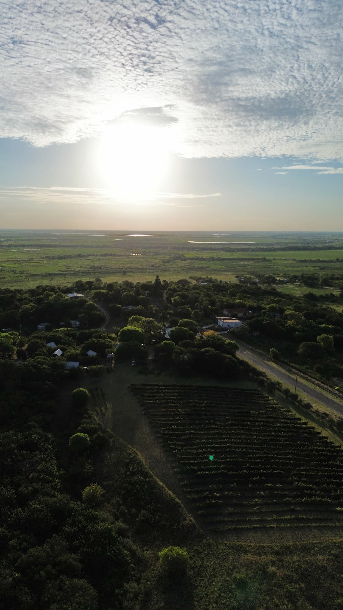
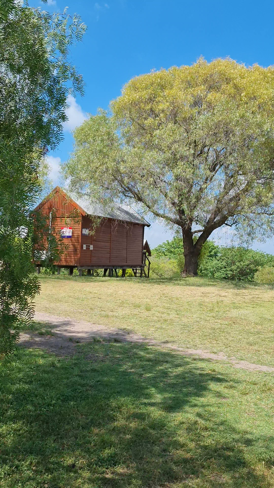
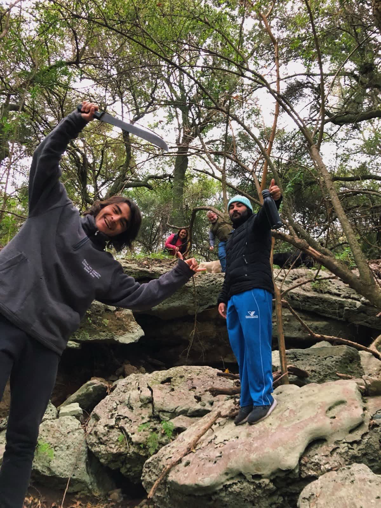
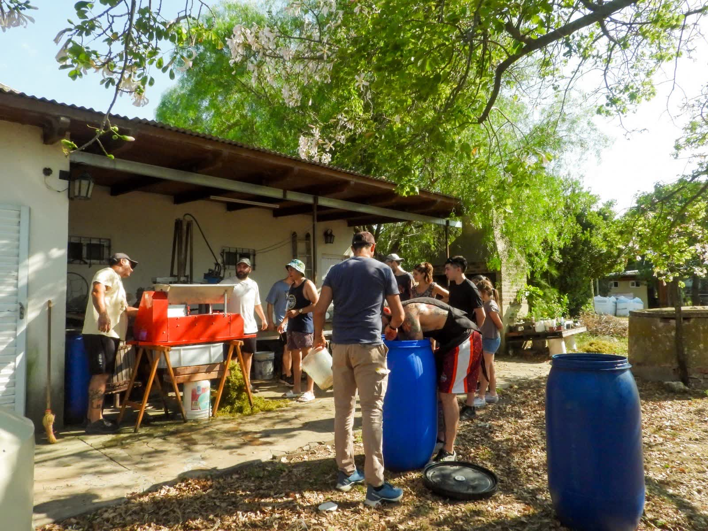
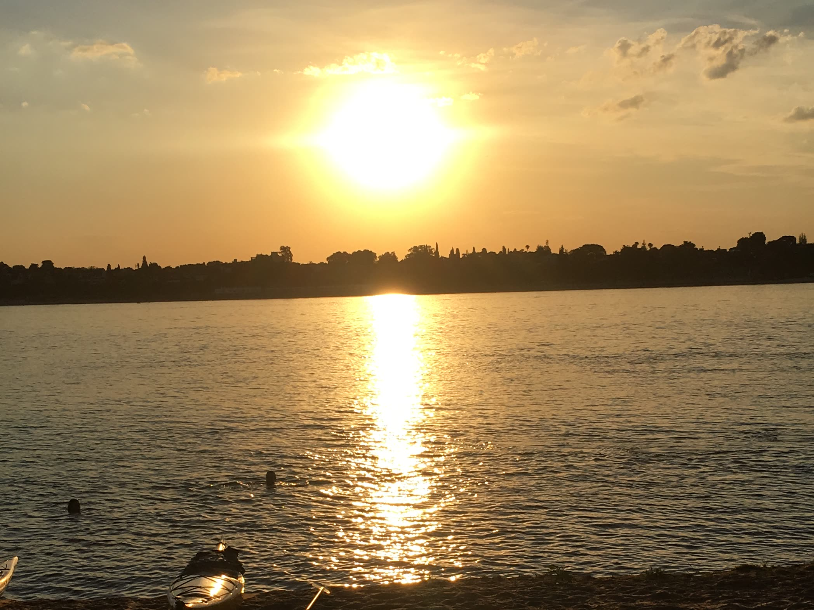
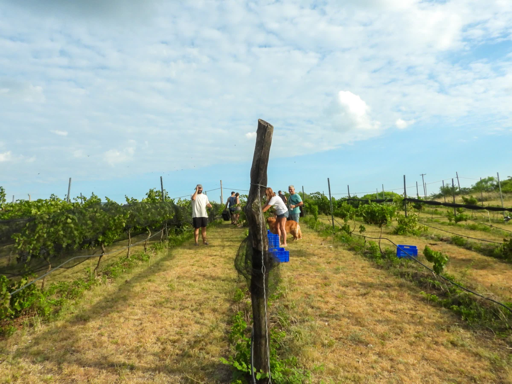
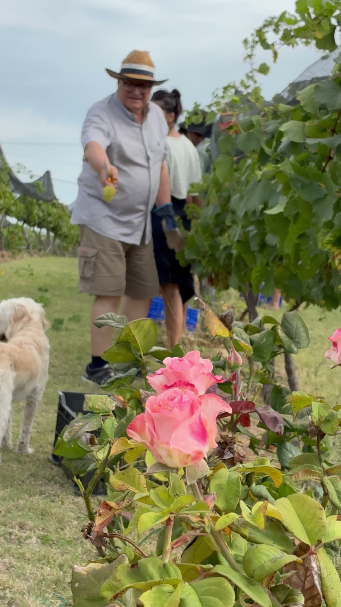
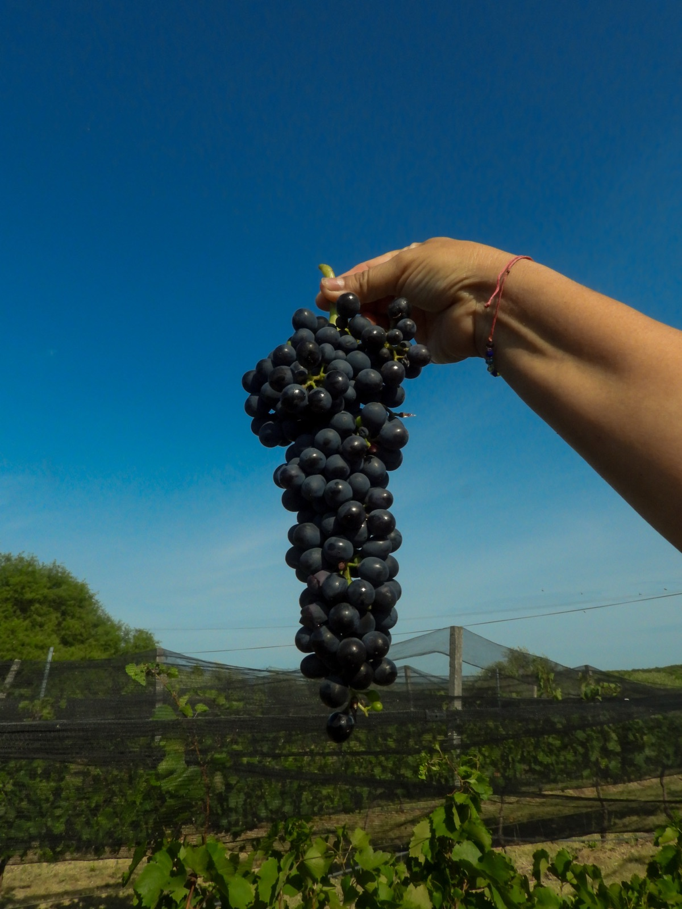

Finca
Las Cuevas
Viñedo, cabañas y ecoturismo. Portal de entrada al Sitio Ramsar Delta del Paraná.
Un rincón donde el tiempo se detiene
Finca Las Cuevas es mucho más que un viñedo. Es una finca familiar atendida por sus dueños: el asado compartido, el bosque nativo, el silencio del delta y más de 350 especies de aves. A pasos del Parque Nacional Predelta, somos Pet Friendly y estamos abiertos todo el año.

La finca, desde el aire
Las hileras del viñedo, el monte nativo y, en el horizonte, el delta del Paraná. Estamos en Las Cuevas, Diamante, a pasos del Parque Nacional Predelta y a una hora y media de Rosario.
Cómo llegarCuatro formas de vivir la finca

Cabañas
Cabañas de madera con pileta, quincho y parrillero. Pet Friendly.

Senderismo
Recorridos guiados por el bosque nativo, la Cueva del Tigre y el bosque energético.

Día de Campo
Asado, vinos artesanales y recorrido por el viñedo.

Actividades
Kayak, pesca, ecoturismo, avistaje de aves y más.

En enero y febrero, la finca se llena de gente cosechando.
Sumate a la vendimia
Conocé nuestra historia
Finca Las Cuevas nació en 2013 como un emprendimiento familiar, donde el viñedo y las cabañas fueron concebidos como un único proyecto. Amantes de la naturaleza, creamos un espacio para quienes buscan descansar, conectarse con el entorno y conocer la elaboración artesanal del vino.
Con el paso de los años seguimos creciendo sin perder nuestra esencia: trabajando en familia, con respeto por el medio ambiente y atendiendo personalmente a cada visita. Acá no hay experiencia impersonal — cada plato está hecho con dedicación y cada botella de RIOMIO cuenta una historia.
Viví la experiencia
Vino artesanal con identidad
Cuatro variedades de uva — Chardonnay, Marcelán, Malbec y Syrah — trabajadas de forma completamente artesanal. Desde la poda hasta la botella, cada paso es manual.
En enero y febrero podés participar de la vendimia y vivir de cerca todo el proceso. También elaboramos espumante artesanal que solo se puede disfrutar en la finca.
- 4
- Variedades
- 13
- Años
- 100%
- Manual
¿Te gustaría visitarnos?
Consultanos disponibilidad de cabañas, coordiná tu día de campo, o simplemente vení a disfrutar del viñedo. Estamos abiertos todo el año.
Escribinos por WhatsApp